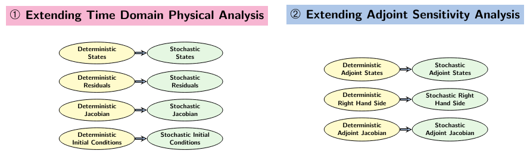
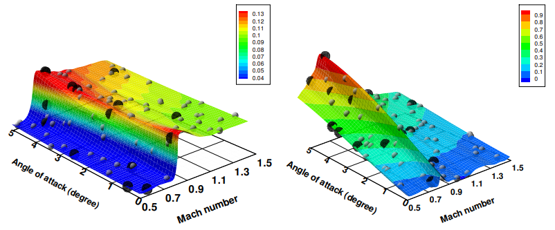
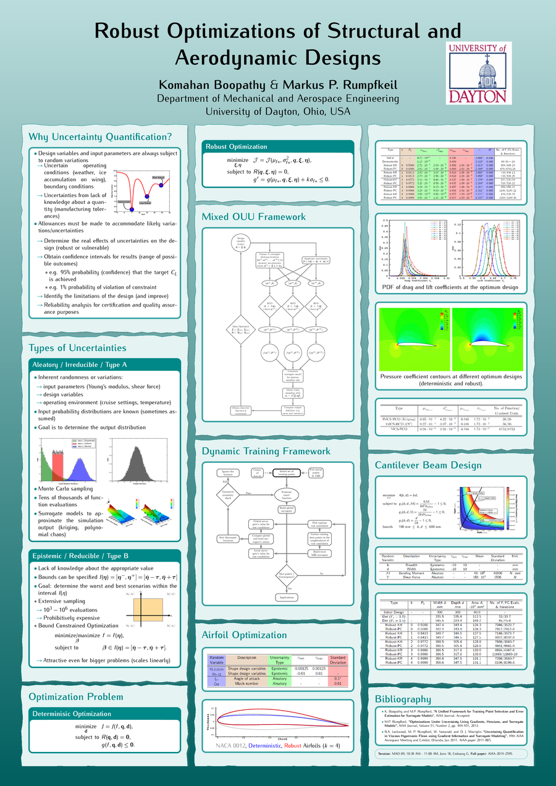
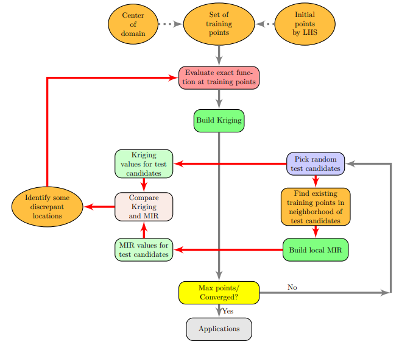

Publications
From surrogate models to adjoint-based optimization under uncertainty
3 journal articles, 7 conference papers, 2 theses and 2 posters, from 2013 to 2024. Each opens on its own page with the abstract, figures and PDF.
2024
2020

Semi-Intrusive Uncertainty Propagation and Adjoint Sensitivity Analysis Using the Stochastic Galerkin Method
22nd AIAA Non-Deterministic Approaches Conference, Orlando, Florida, Jan 2020

Adjoint Based Design Optimization of Systems with Time Dependent Physics and Probabilistically Modeled Uncertainties
Ph.D. Dissertation; School of Aerospace Engineering, Georgia Institute of Technology, Atlanta, Georgia, 2020
2019
2018
2017

2016

2015

Unified Framework for Training Point Selection and Error Estimation for Surrogate Models
AIAA Journal, Vol. 53, No. 1, 2015

Robust Optimization of a Wing Under Structural and Material Uncertainties
17th AIAA Non-Deterministic Approaches Conference, Kissimmee, Florida, Jan 2015
2014

Robust Optimizations of Structural and Aerodynamic Designs
15th AIAA/ISSMO Multidisciplinary Analysis and Optimization Conference, Atlanta, Georgia, June 2014

Uncertainty Quantification and Optimization Under Uncertainty Using Surrogate Models
Master’s Thesis; Department of Mechanical and Aerospace Engineering, University of Dayton, Dayton, Ohio, 2014

Robust optimizations of structural and aerodynamic designs
Poster
2013

Building Aerodynamic Databases Using Enhanced Kriging Surrogate Models
AIAA Region III Student Conference, Chicago, Illinois, April 2013

A Multivariate Interpolation and Regression Enhanced Kriging Surrogate Model
21st AIAA Computational Fluid Dynamics Conference, San Diego, California, June 2013